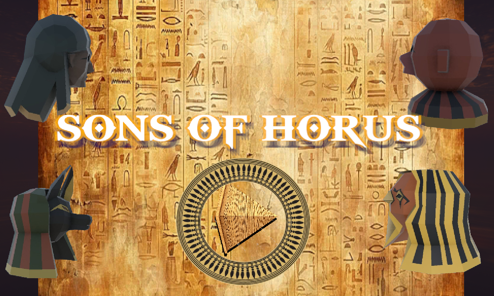
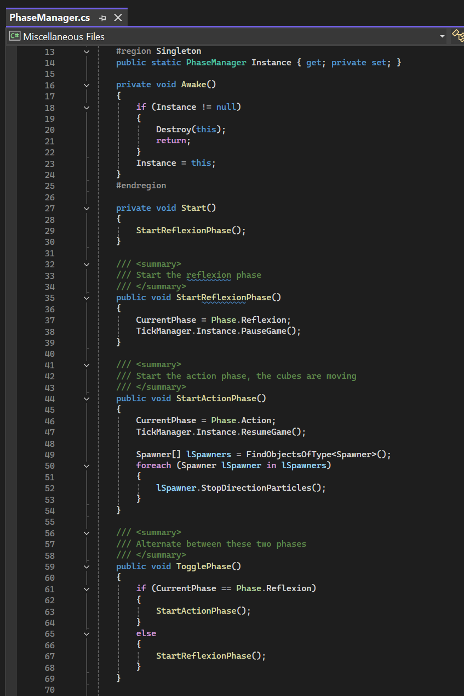

Mon site portfolio
Ce site a été réalisé grâce à un apprentissage HTML et CSS sur Codédex, je n'ai pas été assistée d'une IA.
Bienvenue sur mon site ! Vous y trouverez le résumé de mes projets de jeux vidéo réalisés pendant mes deux années de Game design & programming à ISART Digital.
Vous y trouverez la catégorie des jeux complets et des prototypes réalisés. Je compte également ce site comme faisant partie de mon portfolio, en espérant qu'il vous transmettra mon acquisition de hard skills en HTML et CSS, et qu'il vous partagera d'autant plus ma motivation pour intégrer votre formation.
Skills
Hard skills
- C#
- HTML
- CSS
- Godot
- Unity
- Git
- UX
Soft skills
- Communication
- Travail d'équipe
- Adaptabilité
- Organisation et rigueur
Workflow et outils
Gestion de version
- Git(GitHub/GitLab)
- Fork
Organisation et gestion de tâches
- HacknPlan
- Trello
Conception et UX
- Figma
Jeux complets
SONS OF HORUS
Sons of Horus est un puzzle game 3D consistant à placer des tuiles d'actions (flèches directionnelles, convoyeurs, etc.) pour permettre à des cubes d'atteindre leur destination.
- Unity
- C#
- Blender
- Seule
- Un mois
Extrait de jeu


Extrait de code

Classe PhaseManager
Le jeu alterne entre deux phases : de réflexion (le joueur place des tiles) et d'action (les cubes se déplacent automatiquement).
SELVA
Selva est un platformer en 2,5D voulant retranscire les codes du parcours.
- Unity
- C#
- En groupe
- Deux mois
Extrait de jeu


Extrait de code

Classe PlayerGripBeam
Système de déplacement sur poutre (beam gripping). Le joueur se snap automatiquement sur le point le plus proche de la poutre via une projection orthogonale (produit scalaire), puis se déplace le long d'un ratio clampé entre 0 et 1.
Le snapping utilise une interpolation linéaire (Lerp) temporalisée.
SNOOKER REBOUNCE
Snooker Rebounce est un isometric puzzle game où il faut faire tomber les boules de billard dans leurs trous.
- Godot
- C#
- Blender
- En groupe
- Deux mois
Extrait de jeu


Extrait de code

Classe GridManager
Génération de grille à partir d'une map textuelle, conversion en coordonnées isométriques, instanciation de tuiles typées, et gestion d'un historique pour l'undo/redo.
Prototypes
WHEN THE WIND BLOWS
When the wind blows est un Shoot them up 2D où il faut tirer sur des obstacles et ennemis.
- Godot
- C#
- Seule
- Un mois
Extrait de jeu


Extrait de code

Classe Player
Déplacement avec clamping aux bords de l'écran, système de tir multi-niveaux (tir simple, double, triple selon le level du joueur), et smartbomb via signal.
SOUND QUEST
Sound Quest est un serious game jouable avec un seul input sur mobile, visant un public d'enfants en bas âge, permettant d'associer des images à des sons.
- Godot
- C#
- Seule
- Deux semaines
Extrait de jeu


Extrait de code

Classe Card
Le script gère le comportement individuel de chaque carte : son défilement horizontal en boucle, le zoom au passage dans la zone centrale, et son repositionnement automatique en fin de carrousel.
DOODLE JUMP LIKE
Doodle jump est un platformer-runner jouable sur mobile.
- Unity
- C#
- Seule
- Deux jours
Extrait de jeu

Extrait de code

Classe PlatformSpawner
Le script gère la génération procédurale des plateformes : initialisation des premières plateformes au lancement, puis spawn continu et aléatoire en X au fur et à mesure que la caméra monte, en restant toujours dans les limites visibles de l'écran.
FLAPPY BIRD LIKE
Flappy bird est un runner jouable avec un seul input sur mobile.
- Unity
- C#
- Seule
- Un jour
Extrait de jeu

Extrait de code

Classe PlayerMovement
Le script gère le comportement de l'oiseau : gravité et saut manuel avec rotation visuelle selon la trajectoire, détection de chute hors écran, et scoring au passage entre les tuyaux via un booléen _HasScored pour éviter les points en double.